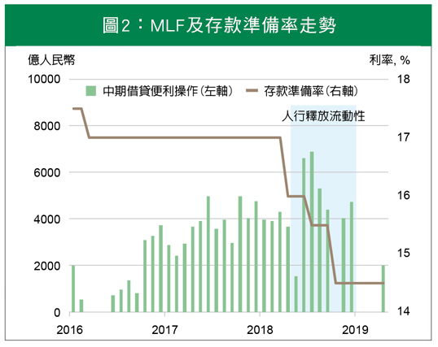
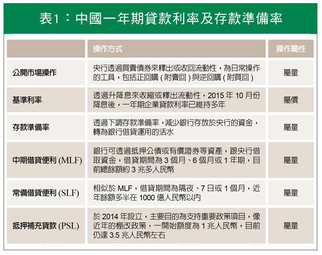
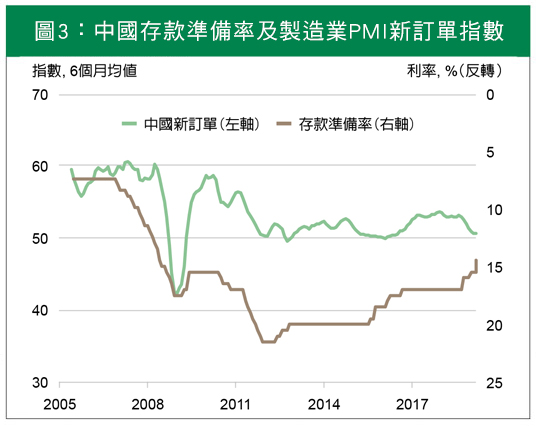
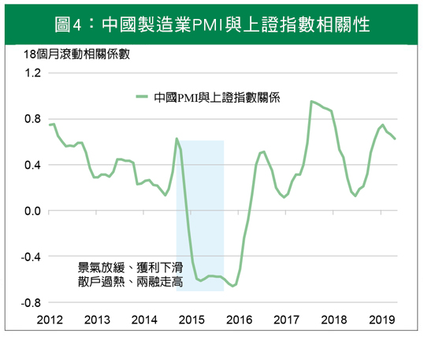

今年首季，在中國景氣放緩趨勢未變下，陸股交出漂亮的成績單，背後推手為美中貿易和談預期及人行貨幣政策稍寬鬆。未來中國股市及基本面走勢，除美中貿易擾動，官方政策發展中，人行 (人民銀行) 將扮演決定性關鍵角色，貨幣政策將如同英雄系列電影中力量無限的寶石，散發救市魔力。
流動性引導陸股多頭氛圍
今年來，陸股漲勢驚人，主要推力來自散戶對股市看法樂觀，深滬兩市的融資餘額走揚 (見圖1)。投資人信心來自中國政策的利多，人行挹注流動性提供支撐。貨幣政策偏緊時，銀行資金需求若不足，則需透過銀行間抵押貸款方式籌資，將推升銀行間7日質押貸款利率 (DR007)走揚﹔反之，DR007偏下移。
流動性的影響力為何如此強大，主因中國企業主要融資管道來自銀行，銀行又傾向把資金貸給違約風險低、資產規模大的企業，資產規模較小或擔保品不足的企業籌資困難，即便與非銀行借款利息高於銀行，資金需求仍高。因此，人行挹注流動性可緩減企業資金需求壓力，對中國經濟成長發展具正面效果。

註：兩者相關係數為0.95。
資料來源：Bloomberg，Wind。
經濟放緩疑慮猶存，中國政策集中火力救市
2018年年中，美中貿易戰打得如火如荼，中國內部發生激烈筆戰，財政派認為貨幣政策能有更多作為，但礙於中央去槓桿政策，限制了人行 (人民銀行) 政策的手腳。市場分析師以“兩肋插刀”來形容中國當時的處境，一刀來自川普關稅，一刀來自去槓桿政策，引導利率走揚，增添經濟下行壓力。
最後，官方政策口吻轉向，去槓桿調整為穩槓桿，人行也透過調降存款準備率及釋出中期借貸準備等工具 (見圖2)，釋出流動性，來減輕貿易戰及景氣放緩的影響。5月初川普再度挑釁將關稅提高至25%，人行前所未見於5月6日早盤時間，宣佈對中小銀行定向降準，穩市味道濃厚。
研判美中關係若持續僵化，或中國景氣下滑速度過快，人行將再伸援手，如同英雄系列電影中的無限手套，發揮貨幣工具的魔力，釋出流動性，舒緩資金需求，並引導銀行間質押利率下行。

資料來源：Wind。
人行政策的六顆寶石
人行主要擁有六個政策工具，如同英雄系列電影中無限手套上的六顆寶石，六顆寶石可區分為價與量的工具 (見表1)，目前官方積極扶植新企業，希望培養下一個騰訊或阿里巴巴等企業，但企業面臨的主要問題在於是籌不到資金，人行欲增加民營企業貸款總額，緩減小型或微型企業籌資困難的狀況，政府近年焦點放在屬量的工具上。
政策利率自2015年10月降息後，目標利率已維持多年，央行透過降低存款準備率，來增加銀行借貸的資金活水。另，針對存款不夠、存貸比太高與缺乏資金的銀行，提供足夠資金以借貸出去，銀行可透過抵押公債或有價證券等資產，來跟央行借取資金，緩解資金需求。

註：定向中期借貸便利 (TMLF) 在去年底初登場，本質與MLF大同小異，主要支應大型商業銀行資金，利率僅3.15%，比一年期的MLF利率低15個基點 (1個基點為0.01%)，分別在2018年12月及2019年4月執行過兩次，目前餘額約5249億人民幣。棚改政策即拆除老舊房屋，並蓋新屋以提升人民居住品質。 資料來源：Wind，國泰世華銀行投資研究團隊整理。
經濟仍處落底階段，靜待景氣止穩訊號
針對美中貿易衝突，考量雙方持續交惡為兩敗俱傷的局面，美中股市市值將如去年交手的狀況，大幅蒸發。另，貿易關稅上調不利經濟活動，民眾支持度若因此下滑，政局穩定度易受影響，研判事件後續仍有轉圜的餘地。
人行透過降準等工具來挹注流動性，對基本面具正面效果 (見圖3)，搭配減稅等擴張性財政政策，待政策效果逐漸發酵，有助經濟成長趨穩。長線回歸基本面，在中國景氣與股市相關性漸增下，經濟回穩將帶動企業獲利成長表現，健康的陸股多頭行情將再現 (見圖4)。
在中國持續國際化改革開放下，隨MSCI將中國納入權重增加，將有被動資金活水流入中國金融市場，長線有利陸股表現。短線美中貿易戰火難熄，投資人勿躁進，靜待風險事件衝突及景氣趨勢止穩訊號，再以長線思維布局陸股。

註：存款準備率 (t-6)與中國新訂單兩者相關係數-0.75。
資料來源：Bloomberg。

資料來源：Bloomberg。
【揭露事項與免責聲明】
本報告為國泰世華銀行（下稱“本公司”）提供尊貴理財客戶之參考資料，並非針對特定客戶所作的投資建議，且在本報告撰寫過程中，並未考量讀者個別的財務狀況與需求，故本報告所提供的資訊無法適用於所有讀者。
本報告係根據本公司所取得的資訊加以彙集及研究分析，本公司並不保證各項資訊之完整性及正確性。本報告中所提出之意見係為本報告出版當時的意見，邇後相關資訊或意見若有變更，本公司將不會另行通知。本公司亦無義務持續更新本報告之內容或追蹤研究本報告所涵蓋之主題。本報告中提及的標的價格、價值及收益隨時可能因各種本公司無法控制之政治、經濟、市場等因素而產生變化。本報告中之各項預測，均係基於對目前所得資訊作合理假設下所完成，所以並不必然實現。本報告不得視為買賣有價證券或其他金融商品的要約或要約之引誘。
國泰金融集團（下稱“本集團”）所屬各公司可能個別基於特定目的且針對特定人士出具研究報告、提供口頭或書面的市場看法或投資建議（下稱“提供資訊”），鑑於提供資訊之單位、時間、對象及目的不同，本報告與本集團其他單位所提供資訊可能有不一致或相牴觸之情事；本集團所屬公司從事各項金融業務，包括但不限於銀行、保險、證券經紀、承銷、自有資金投資、資產管理、證券投資信託等。本集團各公司對於本報告所涵蓋之標的可能有投資或其他業務往來關係，各公司從事交易之方向亦可能與本報告不一致，讀者應審慎評估自身投資風險，自行決定投資方針，不應以前述不一致或相抵觸為由，主張本公司或本集團其他成員有侵害讀者權益之情事。